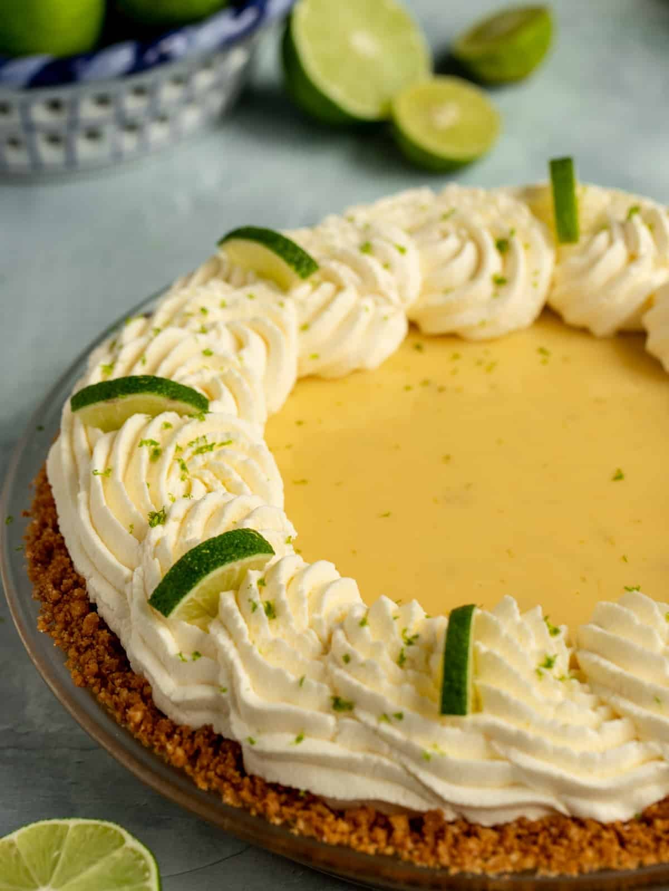

Lime Cake

This lime cake is a tender, buttery dessert that balances sweet vanilla undertones with the sharp, vibrant tang of fresh citrus. It features a tight but incredibly moist crumb, thanks to the combination of creamed butter, vegetable oil, and tangy sour cream.
Ingredients:
- 1 package lemon cake mix
- 1 ⅓ cups vegetable oil
- ¾ cup orange juice
- 4 large eggs
- 1 (3 ounce) package lime flavored Jell-O mix
- 1 (8 ounce) package cream cheese, softened
- ½ cup butter
- 4 cups confectioners' sugar
- 3 tablespoons fresh lime juice
Steps:
- Gather all ingredients. Preheat the oven to 350 degrees F (175 degrees C). Grease three 8-inch round cake pans.
- To make the cake: Beat cake mix, oil, orange juice, eggs, and gelatin mix in a large bowl until well combined.
- Pour into the prepared cake pans.
- Bake in the preheated oven until a toothpick inserted into the center of a cake layer comes out clean, 16 to 18 minutes. Allow cake layers to cool completely.
- Meanwhile, make frosting: Beat cream cheese and butter in a large bowl until light and fluffy.
- Add confectioners' sugar and lime juice; mix until well combined.
- Fill and frost cooled cake layers.
home